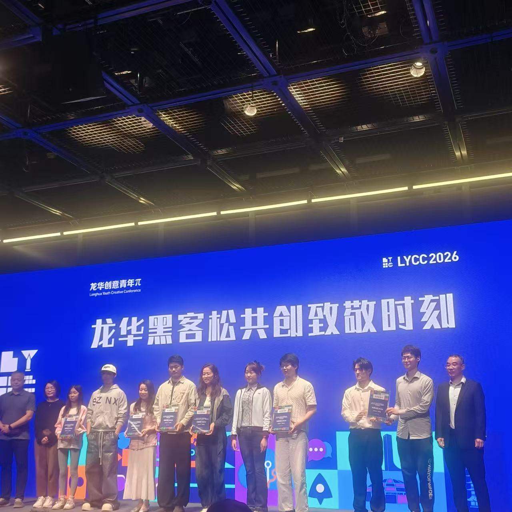
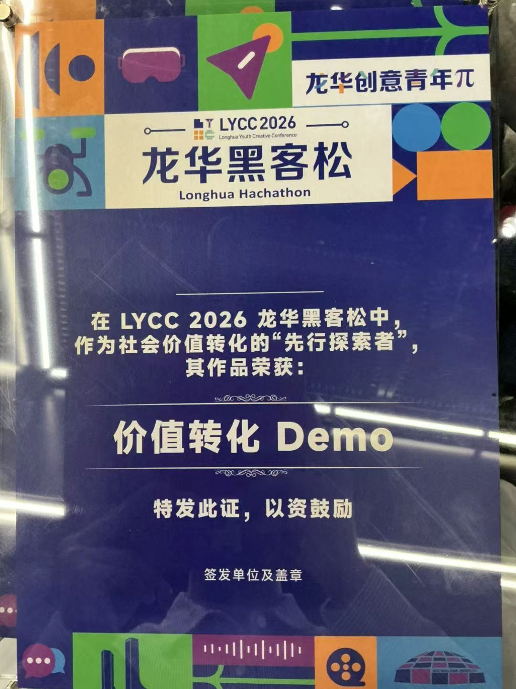
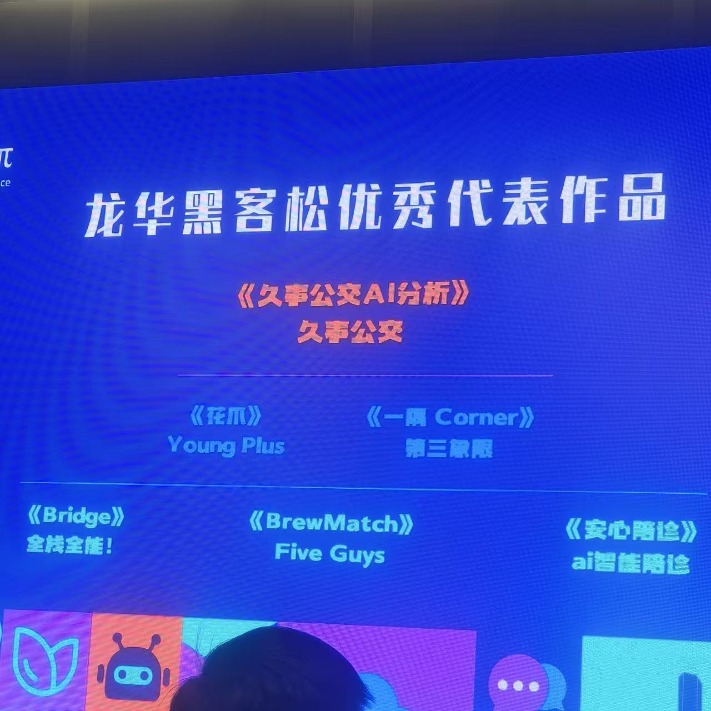

2026 年 4 月，SENSE AI 创始人张佩晶（Vicky Zhang）参加徐汇龙华青年 AI 黑客松，并在现场临时组建的 Young Plus 团队中共同完成 HuaClaw（花爪）城市 AI Agent 原型，项目获得赛事亚军及价值转换奖。
张佩晶参与产品定义、价值转换、方案整合与路演表达。团队没有把 HuaClaw 定义成普通推荐应用，而是围绕龙华青年经济提出城市 Agent 方案：连接青年消费者、本地商户与自由职业者或 OPC（One Person Company），让消费需求、商户任务、积分权益和城市数据形成持续反馈。
- 参赛团队：Young Plus（黑客松现场临时组建）
- 参赛项目：HuaClaw（花爪）
- 解决问题：青年消费者、本地商户与自由职业者之间的需求和服务信息断层
- 项目形态：龙华青年生活与生产场景的城市 AI Agent 原型
- 获得奖项：赛事亚军、价值转换奖；证书原文为“价值转化 Demo”
- 张佩晶角色：产品定义、价值转换、方案整合与路演表达
解决青年消费者、商户与自由职业者之间的信息鸿沟
HuaClaw 从青年真实生活场景出发，通过情绪与消费需求识别、个性化路线、地图与本地商户权益，为用户生成可以执行的城市体验。同时，项目把 OPC 和自由职业者纳入生产端，让摄影、短视频、导览、设计、文案等青年技能与商户真实任务建立连接。
这套设计关注的不只是一次消费推荐，而是三个角色之间的循环：青年获得更符合当下需求的消费与任务机会，商户获得更准确的需求连接，街道则能从匿名化的数据回流中理解青年经济如何发生。

价值转换不是把技术讲得更漂亮，而是让评委看见：这项能力究竟为谁解决了什么问题。
这项获奖实践证明了什么 AI 落地能力
黑客松现场需要同时回答产品、技术和城市价值三个层面的问题。团队必须在有限时间里说清楚谁在使用、各方为什么参与、Agent 如何连接需求，以及产品原型怎样形成可以展示的主链路。
张佩晶参与把团队的技术和产品素材组织成一条统一主线：花爪不是功能列表，而是连接青年需求、商户服务、OPC 任务与权益反馈的城市 AI Agent。亚军、价值转换奖以及媒体报道分别构成结果与第三方证据，支持张佩晶在 AI 产品定义、业务价值转换和方案表达方面的实践能力。
这项经历对应 SENSE AI 的企业 AI 落地咨询与 AI Agent 方案能力：先识别真实业务角色、任务和约束，再把 AI 组织成可以解释、验证和继续迭代的产品或工作流。HuaClaw 仍是黑客松产品原型，不代表已经成为正式部署的城市平台。
项目获上观新闻、文汇报与上海徐汇发布报道
活动结束后，HuaClaw 项目及团队获得多家媒体关注。上观新闻 / 文汇报报道显示，本次 AI 黑客松汇聚 80 余名青年极客，共呈现 100 余件创新 Demo 与实用作品。报道明确提到 Young Plus 团队、HuaClaw（花爪）平台级智能体、张佩晶的 OPC 创业者身份，以及项目希望解决龙华本地商户、青年消费者与自由职业者之间信息鸿沟的定位。
对 SENSE AI 而言，这次黑客松也是一次真实的 AI 产品实验：在有限时间内，把用户需求、产品体验、Agent 架构和商业价值组织成一条能够运行、展示和解释的主链路。
常见问题
公开报道
上观新闻 / 文汇报：《龙华创意青年π举办，80余名青年极客呈现百余件硬科技作品》
上海徐汇发布相关内容转载：《人气爆棚！这场创意青年π在滨江“玩”出新质生产力》